前言
众所周知，Spring不仅只是一个框架，Spring已然成为一种生态。它的出现大大简化了企业级应用程序开发，与我们的工作紧密相关，居然它这么重要，我们更应该去深入源码级的学习它，深入了解Spring不仅可以快速帮助我们排查问题，还会在学习的过程中学到许多设计思想，对我们日常开发也会有很大的帮助。
一、IOC和DI
我相信你已经在许许多多的地方都看到过关于 IOC 和 DI 的解释了，但这里我还是不得不提一下它们的概念。
IOC(Inversion of Control)控制反转：所谓控制反转，就是把原先我们代码里面需要实现的对象创建、依赖的代码，反转给容器来帮忙实现。
DI(Dependency Injection)依赖注入：就是指对象是被动接受依赖类而不是自己主动去找，换句话说就是指对象不是从容器中查找它依赖的类，而是在容器实例化对象的时候主动将它依赖的类注入给它。
可以这么说，DI是依赖于IOC的，其实不仅是DI，AOP也是依赖于IOC的。
二、几个问题
① 我们通常如何表示对象和对象的关系？
② 那么描述对象关系的文件又存放在哪里？
③ 如何统一配置文件的一个标准？
④ 如何对不同的配置文件进行解析？
三、IOC容器是如何干活的
IOC 容器的初始化流程是怎么样的呢？
简单的来说，分为三步，如下图

而这三步又可进行细分，便于我们去阅读源码，如下图

四、Spring核心容器类
在源码中，Spring 核心容器类无非以下几个：
1、BeanFactory
BeanFactory 作为最顶层的一个接口类，它定义了IOC 容器的基本功能规范。它根本不关心你的Bean是如何定义怎样加载的。正如我们只关心工厂里得到什么的产品对象，至于工厂是怎么生产这些对象的，这个基本的接口不关心。
BeanFactory继承体系图如下：

BeanFactory 三个重要子类 ListableBeanFactory、HierarchicalBeanFactory、AutowireCapableBeanFactory。
ListableBeanFactory接口表示这些Bean是可列表化的，HierarchicalBeanFactory接口表示的是这些Bean是有继承关系的，即每个Bean有可能有父Bean，而AutowireCapableBeanFactory接口定义了Bean的自动装配规则。
BeanFactory的默认实现类是 DefaultListableBeanFactory
当然，Spring 中的一些 常用的IOC容器实现有ClassPathXmlApplicationContext、WebApplicationContext、GenericApplicationContext 以及ApplicationContext。其中，ClassPathXmlApplicationContext用来处理 xml 文件，WebApplicationContext用来处理Servlet层面的Session、Request、Listener、Filter等等。而ApplicationContext是Spring提供的一个高级的IOC容器，它除了能够提供IOC容器的基本功能外，还为用户提供了附加服务，例如支持信息源，可以实现国际化（实现MessageSource接口）、访问资源（实现 ResourcePatternResolver接口）、支持应用事件（实现ApplicationEventPublisher接口）等。
2、BeanDefinition
Spring IOC 容器管理了我们定义的各种 Bean对象及其相互的关系，Bean对象在Spring 实现中是以 BeanDefinition 来描述的，其继承体系如下：

其中最常用的类是 AbstractBeanDefinition
3、BeanDefinitionReader
Bean 的解析过程非常复杂，功能被分的很细，因为这里需要被扩展的地方很多，必须保证有足够的灵活性，以应对可能的变化。Bean 的解析主要就是对Spring 配置文件的解析。这个解析过程主要通过BeanDefintionReader 来完成。
其继承体系如下：

XmlBeanDefinitionReader 用于解析 xml 文件，对于注解方式，不需要专门的类进行解析，而是通过 ClassLoader 可以获得注解的信息，然后直接将其转换成 BeanDefinition。
五、源码解析
关于IOC容器的主流程如下：
1、寻找IOC容器初始化入口
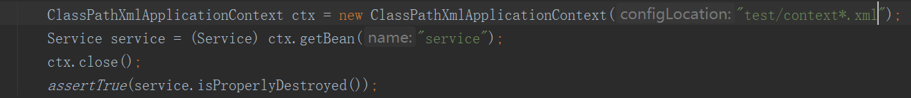
2、定位配置文件的 setConfigLocations() 方法
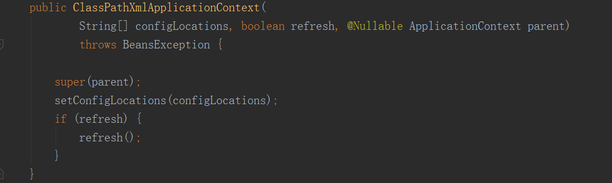
3、AbstractApplicationContext 的 refresh() 方法
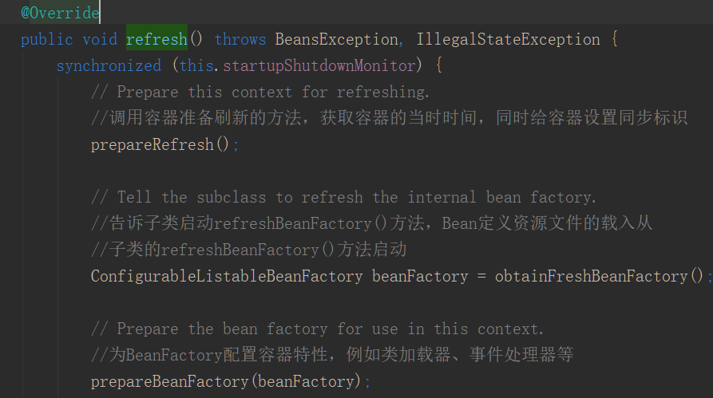
4、AbstractApplicationContext 的 obtainFreshBeanFactory() 方法
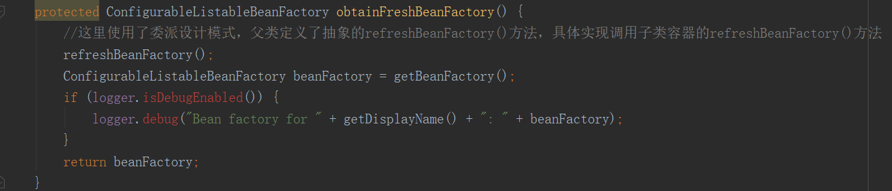
5、AbstractRefreshableApplicationContext子类的loadBeanDefinitions方法
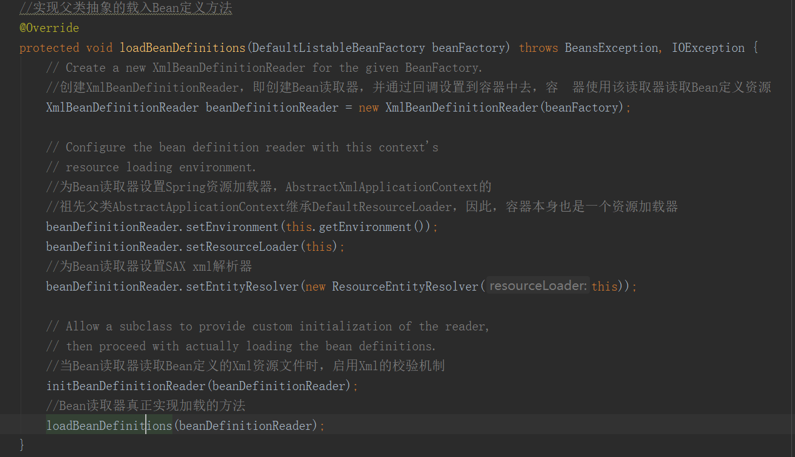
6、AbstractBeanDefinitionReader 读取Bean 配置资源
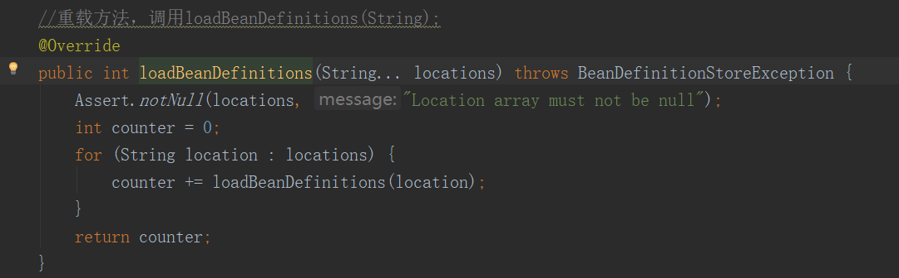
7、资源加载器获取要读入的资源
8、XmlBeanDefinitionReader 加载Bean配置资源
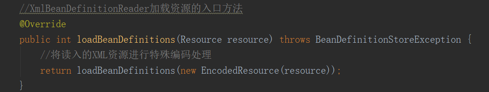
9、DocumentLoader 将 Bean配置资源转换为 Document 对象
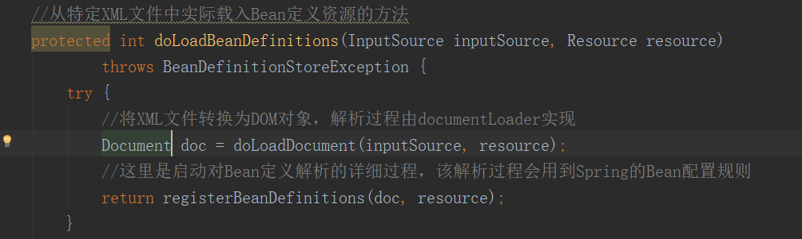
10、XmlBeanDefinitionReader 解析载入的 Bean 配置资源文件
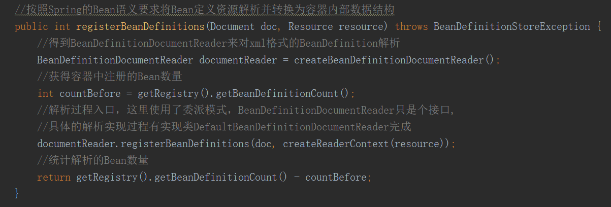
11、DefaultBeanDefinitionDocumentReader 对Bean定义的 Document对象解析
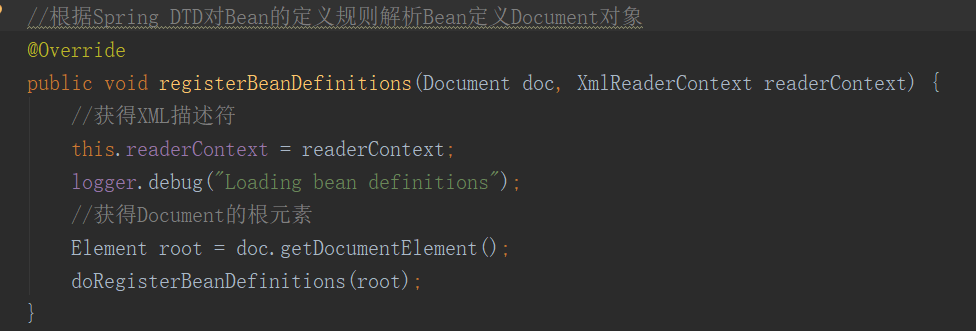
12、BeanDefinitionParserDelegate 解析Bean配置资源文件中的 bean 元素
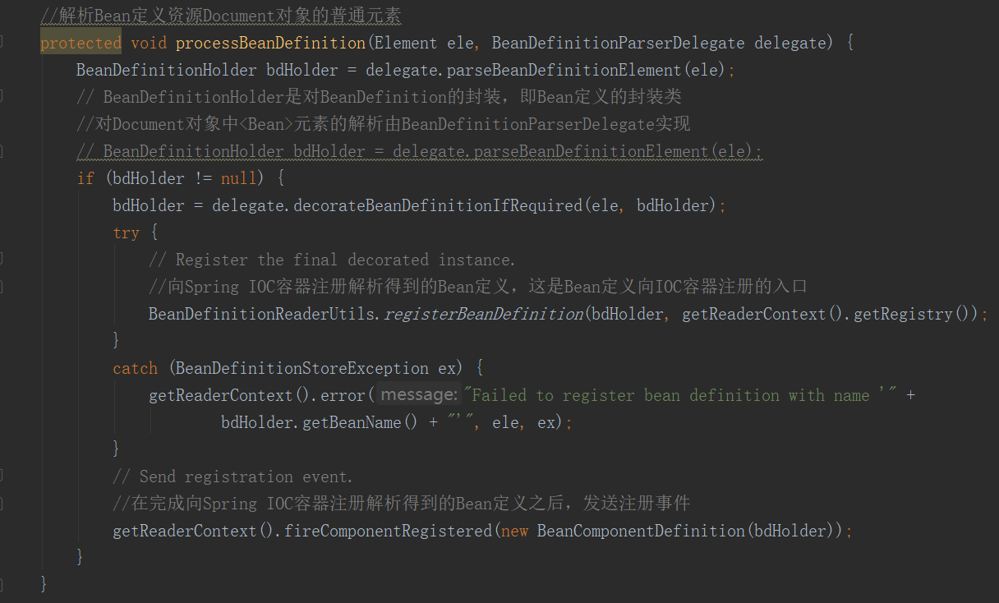
13、BeanDefinitionParserDelegate 解析 property 元素
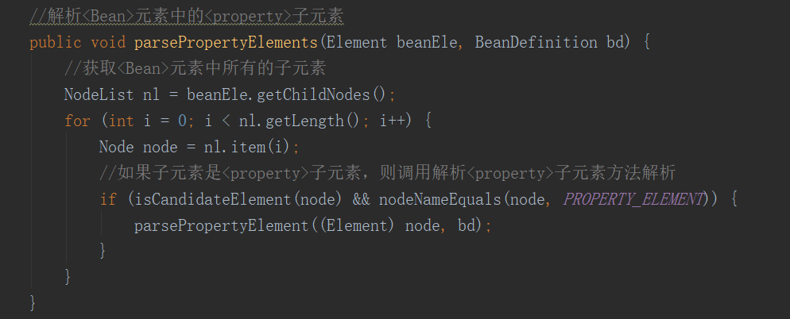
14、解析 property 元素的子元素
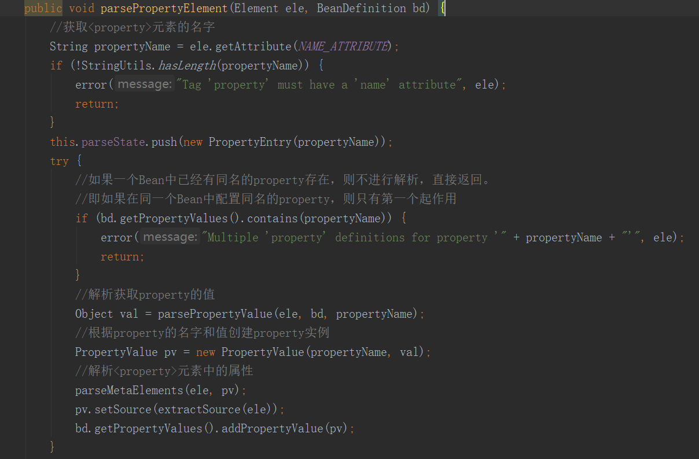
15、解析 list 元素
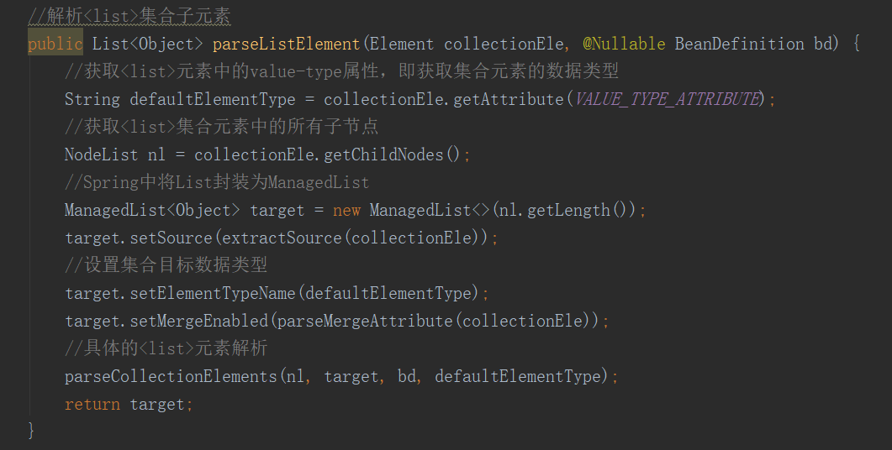
16、解析过后的 BeanDefinition 在IOC容器中注册
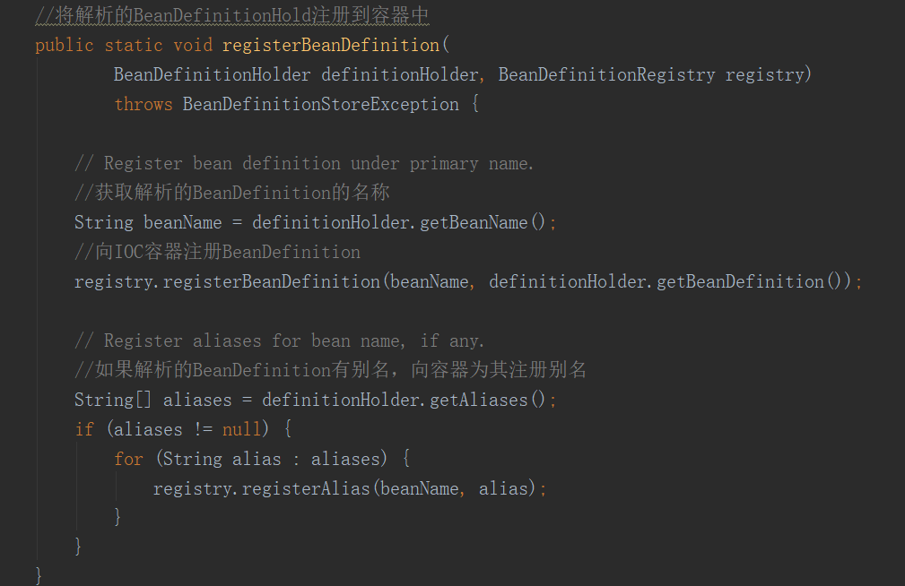